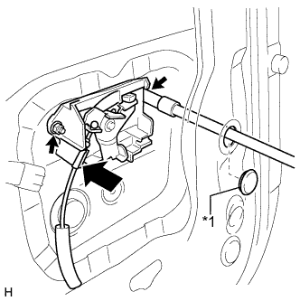
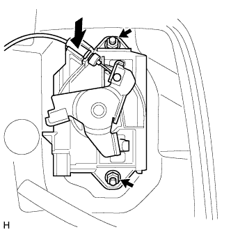
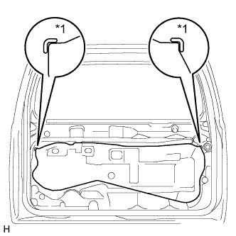
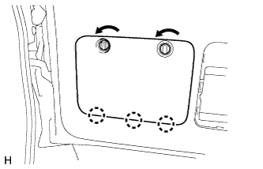
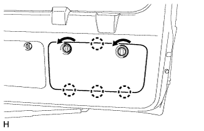

НАРУЖНАЯ НАКЛАДКА ДВЕРИ БАГАЖНОГО ОТДЕЛЕНИЯ (для моделей без кронштейна запасного колеса) > УСТАНОВКА |
| 1. УСТАНОВИТЕ НАРУЖНУЮ НАКЛАДКУ ДВЕРИ БАГАЖНОГО ОТДЕЛЕНИЯ В СБОРЕ |
Введите в зацепление 13 захватов и установите наружную накладку двери багажного отделения.
Заверните гайку.
Подсоедините разъем.
| 2. УСТАНОВИТЕ ЗАДНЮЮ ТЕЛЕКАМЕРУ В СБОРЕ (для моделей с системой монитора заднего вида) |
Установите заднюю телекамеру и закрепите ее 2 болтами.
Подсоедините разъем.
| 3. УСТАНОВИТЕ ФИКСАТОР ОБЛИЦОВКИ ДВЕРИ БАГАЖНОГО ОТДЕЛЕНИЯ № 2 (для моделей без системы монитора заднего вида) |
Установите фиксатор облицовки двери багажного отделения № 2 на панель двери и закрепите его 2 винтами.
| 4. УСТАНОВИТЕ ЛЕВУЮ НАРУЖНУЮ РУЧКУ ДВЕРИ БАГАЖНОГО ОТДЕЛЕНИЯ |
Для моделей с кронштейном запасного колеса на двери багажного отделения:
|  |
Подсоедините кабель.
Установите наружную ручку двери багажного отделения и закрепите ее 2 гайками.
Вставьте пробку отверстия.
| *1 | Пробка отверстия |
Для моделей без кронштейна запасного колеса на двери багажного отделения:
|  |
Подсоедините кабель.
Установите наружную ручку двери багажного отделения и закрепите ее 2 гайками.
| 5. УСТАНОВИТЕ КРЫШКУ ТЕХНОЛОГИЧЕСКОГО ОТВЕРСТИЯ ДВЕРИ БАГАЖНОГО ОТДЕЛЕНИЯ |
|  |
Наклейте новую бутиловую ленту на панель задней двери багажного отделения.
Закрепите крышку технологического отверстия задней двери, используя контрольные точки на панели задней двери.
| *1 | Контрольная точка |
| 6. УСТАНОВИТЕ ПАНЕЛЬ ОБЛИЦОВКИ ДВЕРИ БАГАЖНОГО ОТДЕЛЕНИЯ В СБОРЕ |
Для моделей без кронштейна запасного колеса на двери багажного отделения:
Введите в зацепление 15 фиксаторов, чтобы установить облицовочную панель двери багажного отделения.
Вверните болт.
Для моделей с кронштейном запасного колеса на двери багажного отделения:
Введите в зацепление 16 фиксаторов, чтобы установить облицовочную панель двери багажного отделения.
Вверните болт.
Для моделей с противоположно расположенными сиденьями:
Введите в зацепление 15 фиксаторов, чтобы установить облицовочную панель двери багажного отделения.
Вверните болт.
Заверните винт.
Введите в зацепление захват, чтобы установить крышку.
| 7. УСТАНОВИТЕ КРЫШКУ ЗАМКА ДВЕРИ БАГАЖНОГО ОТДЕЛЕНИЯ |
Введите в зацепление 6 захватов, чтобы установить крышку замка двери багажного отделения.
| 8. УСТАНОВИТЕ ЯЩИК ДЛЯ ИНСТРУМЕНТОВ |
Введите в зацепление 2 захвата, чтобы установить ящик для инструментов.
| 9. УСТАНОВИТЕ ВЕРХНЮЮ ПАНЕЛЬ ЯЩИКА ДЛЯ ИНСТРУМЕНТОВ В СБОРЕ |
|  |
Введите в зацепление 3 захвата.
Установите верхнюю панель ящика для инструментов, как показано на рисунке.
| 10. УСТАНОВИТЕ ОБЛИЦОВОЧНУЮ НАКЛАДКУ ДВЕРИ БАГАЖНОГО ОТДЕЛЕНИЯ |
|  |
Введите в зацепление 4 захвата.
Установите облицовочную накладку двери багажного отделения, как показано на рисунке.
| 11. УСТАНОВИТЕ ЛЕВУЮ БОКОВУЮ ОБЛИЦОВКУ ДВЕРИ БАГАЖНОГО ОТДЕЛЕНИЯ |
Установите боковую облицовку двери багажного отделения, закрепив ее 2 фиксаторами.
| 12. УСТАНОВИТЕ ПРАВУЮ БОКОВУЮ ОБЛИЦОВКУ ДВЕРИ БАГАЖНОГО ОТДЕЛЕНИЯ |
Установите боковую облицовку двери багажного отделения, закрепив ее 2 фиксаторами.
| 13. УСТАНОВИТЕ ЦЕНТРАЛЬНУЮ ОБЛИЦОВКУ ДВЕРИ БАГАЖНОГО ОТДЕЛЕНИЯ |
Введите в зацепление 4 фиксатора и установите центральную облицовку двери багажного отделения.
| 14. ОТРЕГУЛИРУЙТЕ ПОЛОЖЕНИЕ ЗАДНЕЙ ТЕЛЕКАМЕРЫ (для моделей с монитором заднего вида) |
Для моделей с монитором бокового обзора:
Отрегулируйте положение задней телекамеры (Нажмите здесь).